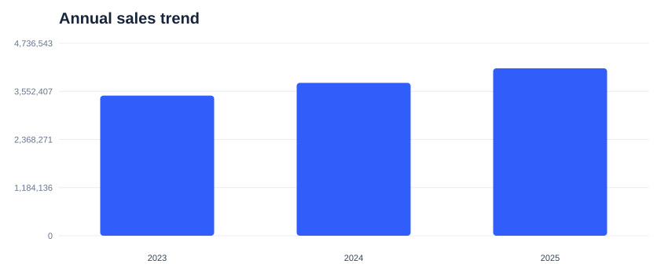
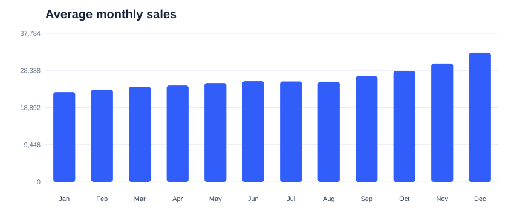
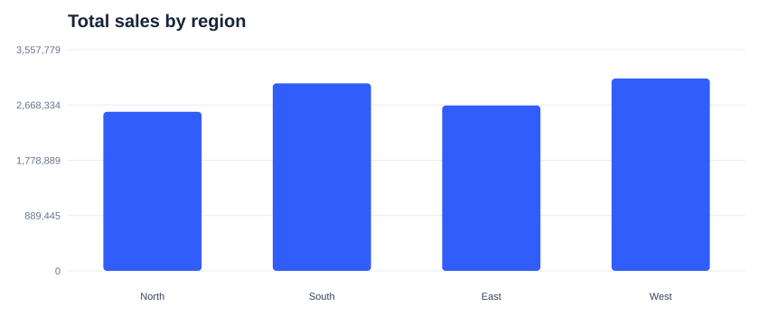

Sales are growing — but the opportunity is not evenly distributed.
Across this synthetic three-year sample, sales rose from ₹3.45M in 2023 to ₹4.12M in 2025: cumulative growth of 19.5%. The question is where that growth comes from, and where to focus next.
1 / 7A clear upward trend creates a strong starting point.
Sales grew 9.1% in 2024, followed by 9.5% in 2025. Growth continued, but its pace changed. That makes it important to look beyond the headline total.

2 / 7The strongest sales period is concentrated toward year-end.
December has the highest average monthly sales, while January is the lowest. The seasonal pattern suggests planning inventory and campaigns before the year-end uplift begins.

3 / 7Regional performance is uneven.
West is the largest region by total sales, contributing 27.3% of the three-year total. Regional year-over-year growth in 2025 ranges from 7.9% to 10.4%, so one national strategy may miss local opportunities.

4 / 7Electronics is the largest product contributor.
Fashion accounts for 35.4% of total sales in this sample. Protect the core category while testing growth in smaller categories to reduce dependence on one contributor.
 5 / 7
5 / 7Plan earlier, tailor by region, and diversify category growth.
1) Prepare inventory and campaigns before the seasonal peak. 2) Investigate regional conversion, availability, and promotion effectiveness. 3) Test focused campaigns in smaller categories and scale only where incremental margin is positive.
6 / 7Use the next planning cycle to test three focused moves.
Approve a pre-season readiness plan, commission a regional performance deep dive, and run two category-growth experiments. Review after one quarter using sales, gross margin, stock-outs, and repeat purchase — not revenue alone.
7 / 7